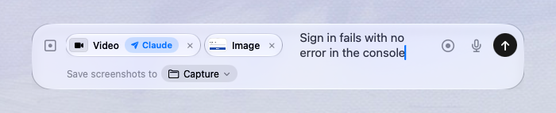
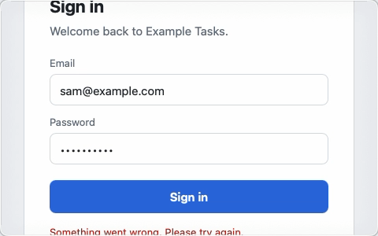
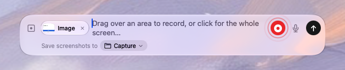

Record the bug.
Your agent reads it.
Capture turns a screen recording into frames and words an agent reads.
Capture turns a screen recording into frames and words an agent reads.


An agent can’t play a video. So Capture sends what it can read.
Without Capture, you type
sign in is broken, not sure why
With Capture, it receives
 0:01
0:01 0:04
0:04
0:08 0:11
0:11 0:14
0:14 0:18
0:18What you said“I click sign in. It says signing in, and then it just says something went wrong, nothing in the console.”
The video, kept beside them~/Documents/Capture/shared/2026-11-23 at 10.43.17/recording.mov
A real 19 second recording. The transcript is made on your Mac.
Not every capture is a bug. The same bar takes all of it.

No account. Speech and text are read on your Mac.
| Needs | Why |
|---|---|
| macOS 26 or later | The on-device speech engine |
| Screen Recording | Screenshots and recordings |
| Microphone | Voice notes, and your voice in recordings |
| Speech Recognition | Live typing and transcripts |
| A place for files | ~/Documents/Capture, or a folder you pick |
It lives in your menu bar and opens when you log in.
Store link at launch